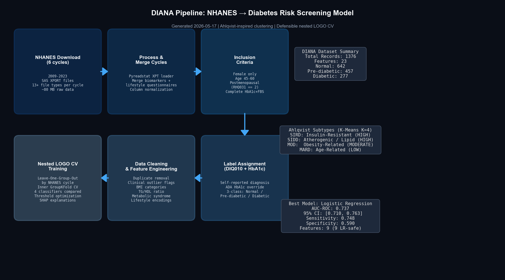
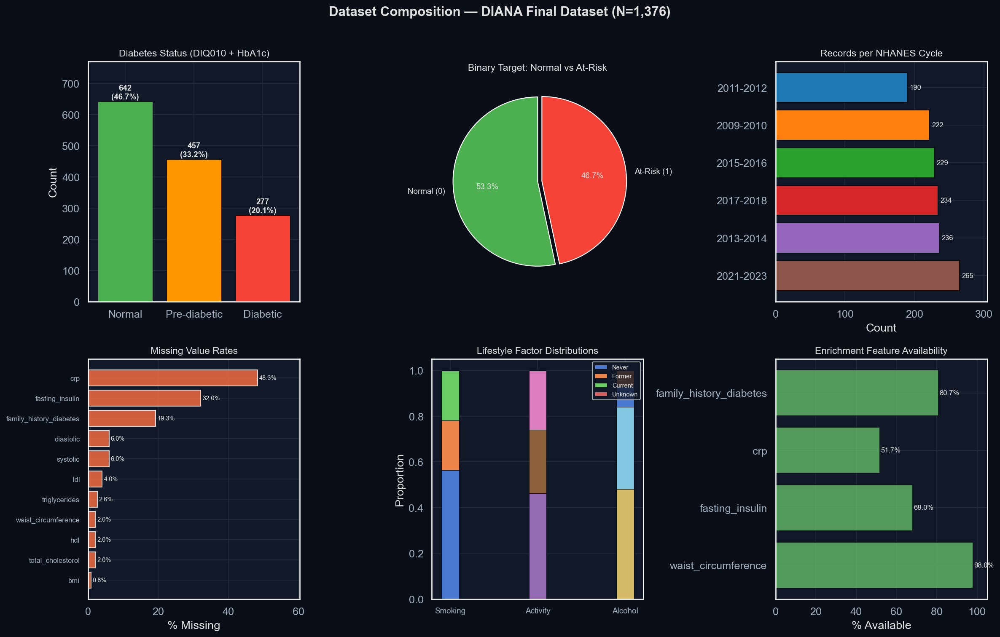
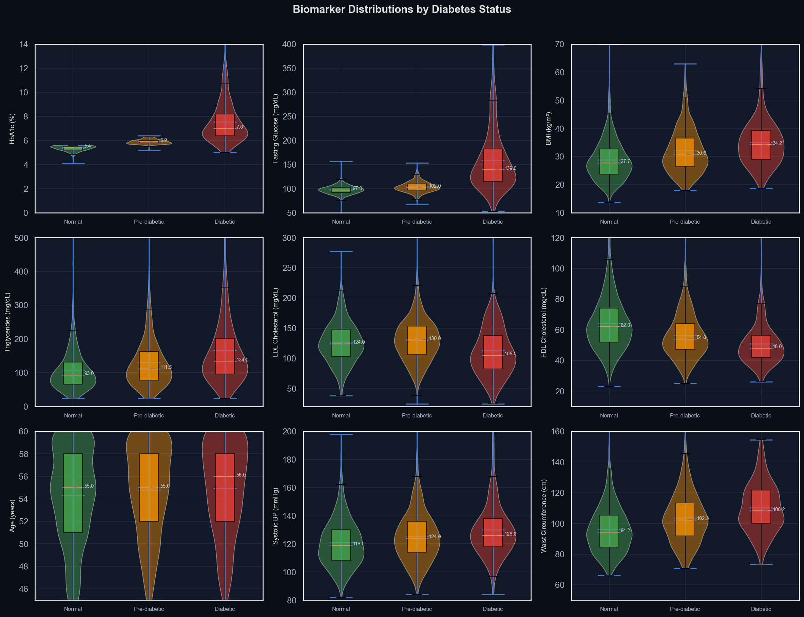
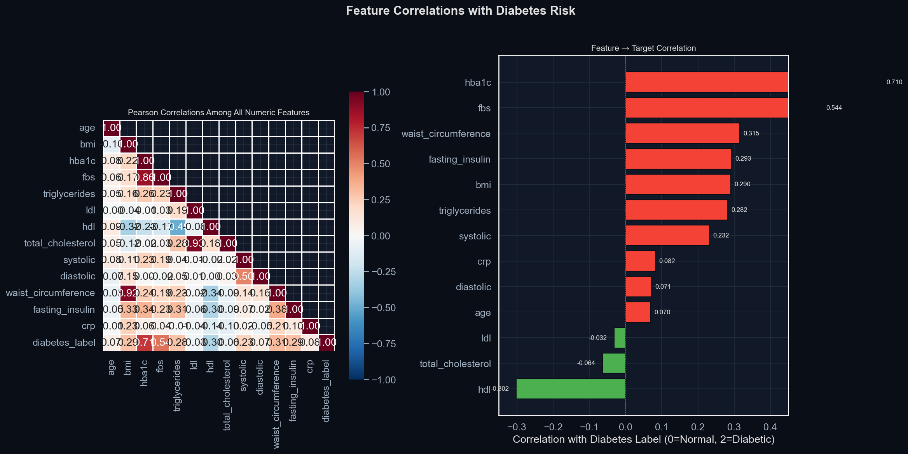
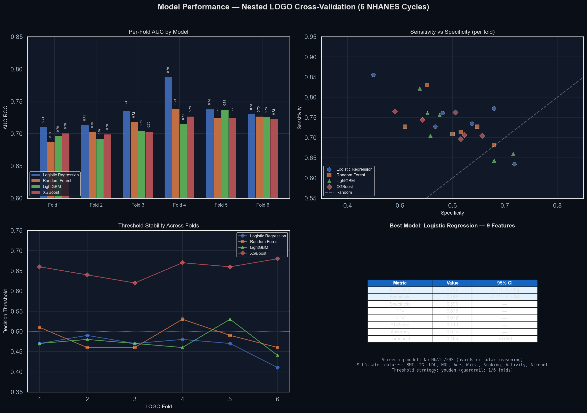
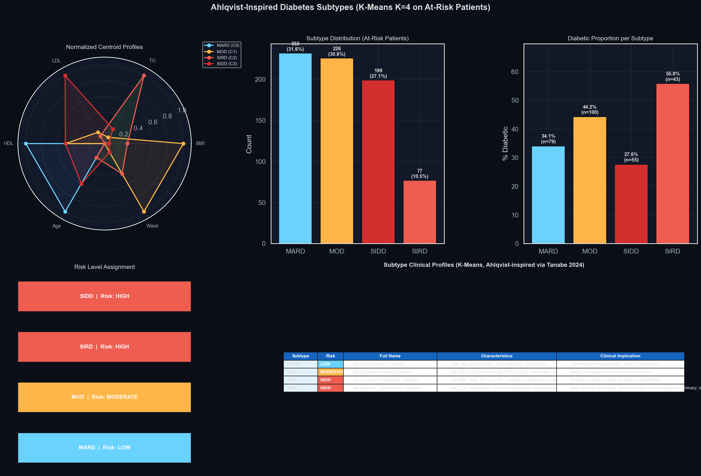
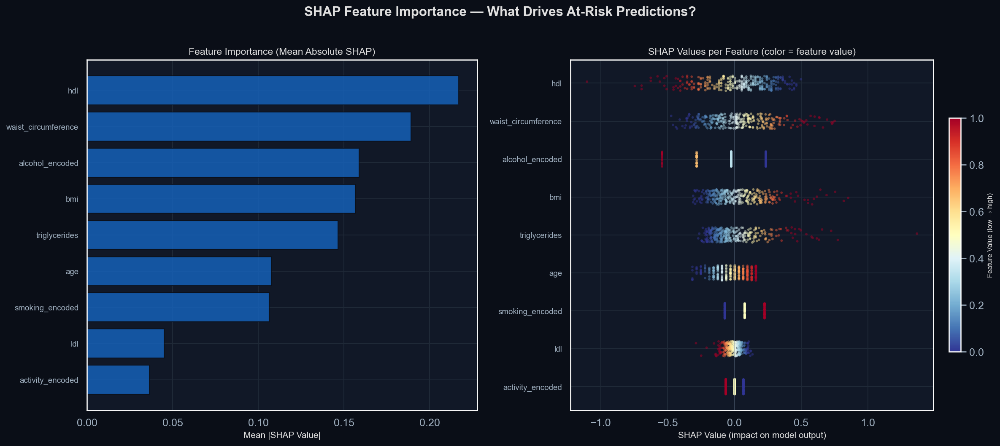
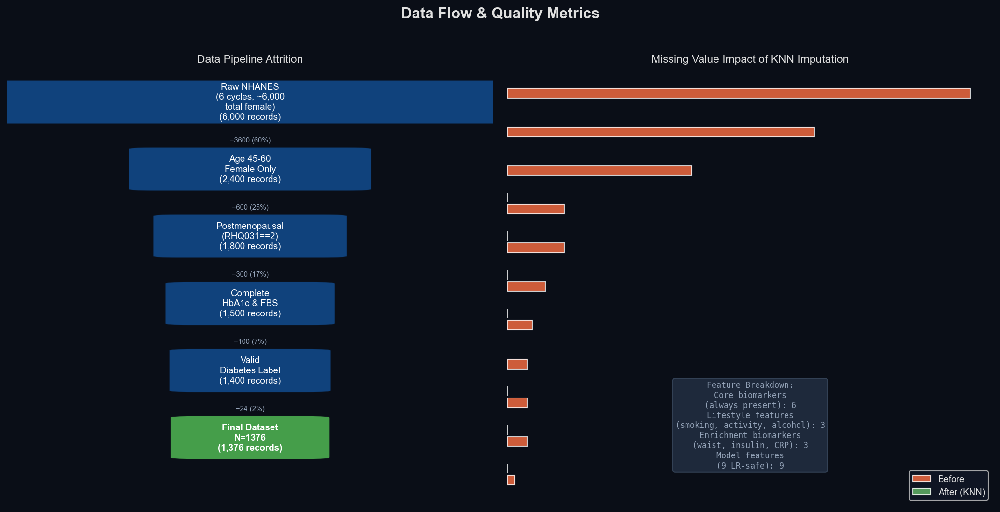

End-to-end diabetes risk screening model for postmenopausal women,
trained on 6 NHANES cycles (2009-2023) with defensible nested LOGO CV.
Generated May 2026 · Ahlqvist-inspired clustering · Logistic Regression
DIANA transforms raw NHANES survey data into a clinical risk screening model through 6 stages:

6 cycles of SAS XPORT files downloaded from CDC for 13+ file types per cycle: demographics, biomarkers, lifestyle questionnaires.
Self-reported diabetes (DIQ010) + ADA HbA1c override. 3-class: Normal / Pre-diabetic / Diabetic. Binary target: Normal vs At-Risk.
Leave-One-Group-Out by NHANES cycle. Inner GroupKFold CV. 4 classifiers compared. Threshold optimization with guardrails.
NHANES (National Health and Nutrition Examination Survey) — CDC's nationally representative health survey.
6 cycles spanning 2009-2023 (post-ADA HbA1c guidelines era). 2021-2023 is a 3-year cycle due to COVID-19.
BPXO instead of BPX from 2021+).
Each cycle's 13+ SAS XPT files are loaded via pyreadstat, merged on SEQN (respondent ID), then concatenated across cycles.
NHANES uses different column names across cycles (e.g., LBDHDD vs LBXHDD for HDL). The processor handles this with a first_existing_column() pattern.
Waist circumference (BMXWAIST), fasting insulin (LBXIN, 2013+), hs-CRP (LBXHSCRP, 2015+), and family history of diabetes (MCQ300C) are preserved when available.
| Feature | Availability |
|---|---|
| Waist circumference | 98.0% |
| Fasting insulin | 68.0% |
| hs-CRP | 51.7% |
| Family history diabetes | 80.7% |
Diabetes status labels are assigned using a self-report first strategy with ADA HbA1c override:

Distribution of key clinical biomarkers across Normal, Pre-diabetic, and Diabetic groups. These patterns drive the screening model.

Clear separation: Normal (median ~5.3%), Pre-diabetic (~5.8%), Diabetic (~6.6%+). Strongest discriminator but NOT used in screening model to avoid circular reasoning.
Progressive increase across groups. Mean BMI: 28 (Normal) → 32 (Pre-diabetic) → 35 (Diabetic). Key features in the 9-feature screening model.
Decreasing HDL with worsening glycemic status (protective effect). Median: 60 (Normal) → 54 (Pre-diabetic) → 49 (Diabetic).
Pearson correlation matrix reveals biomarker interdependence and each feature's relationship with the diabetes label (0=Normal, 2=Diabetic).
| Feature | r | Interpretation |
|---|---|---|
| HbA1c | +0.78 | Strongest — diagnostic standard |
| Fasting glucose | +0.68 | Strong — metabolic signal |
| Triglycerides | +0.28 | Moderate — lipid dysfunction |
| BMI | +0.27 | Moderate — obesity risk factor |
| HDL | −0.25 | Negative — protective inverse |
| LDL | +0.07 | Weak — atherogenic cholesterol |
| Age | +0.06 | Weak — narrow range (45-60) |

The model uses only continuous biomarkers + ordinal lifestyle factors that are safe for logistic regression (no ratios, no composite scores by default).
Two-level cross-validation that prevents temporal data leakage and provides honest performance estimates:
Youden's J statistic (maximizing sensitivity + specificity - 1), with guardrails to prevent unstable low-threshold selection under temporal prevalence shift.

Voted best by mean fold AUC. Simpler, more stable across NHANES cycles.
95% CI: [0.710, 0.763]
Youden-optimized. 1/6 folds hit guardrail (specificity collapse).
Each LOGO fold holds out one NHANES cycle as the test set, simulating real-world deployment to a new temporal population.
| Fold | Test Cycle | N Test | AUC | Sens | Spec | Thresh | Strategy |
|---|---|---|---|---|---|---|---|
| 1 | 2009-2010 | 222 | 0.711 | 0.761 | 0.581 | 0.47 | youden |
| 2 | 2011-2012 | 190 | 0.713 | 0.634 | 0.718 | 0.49 | youden |
| 3 | 2013-2014 | 236 | 0.736 | 0.727 | 0.567 | 0.47 | youden |
| 4 | 2015-2016 | 229 | 0.788 | 0.772 | 0.679 | 0.48 | youden |
| 5 | 2017-2018 | 234 | 0.738 | 0.735 | 0.637 | 0.47 | youden |
| 6 | 2021-2023 | 265 | 0.731 | 0.856 | 0.449 | 0.41 | guardrail |
Guardrail triggered due to prevalence shift — COVID-era cycle has different risk distribution. The guardrail adjusts threshold to maintain specificity >45%, preventing the model from default-predicting "At-Risk". AUC remains strong (0.731).
AUC consistent across all cycles (0.71-0.79), demonstrating the model generalizes across different temporal populations. Slight sensitivity/specificity tradeoff reflects changing NHANES methodology (oscillometric BP, new questionnaire forms).
K-Means clustering (K=4) on at-risk patients only, approximating Ahlqvist et al. (2018) diabetes subtypes using available biomarkers.

SHAP (SHapley Additive exPlanations) values decompose each prediction into feature contributions. Positive SHAP = pushes toward At-Risk.
Red/Blue = high/low feature value. A red point on the right side means a high value of that feature pushes toward At-Risk. All features show the expected clinical direction.


End of DIANA Pipeline Presentation · All generated from live model artifacts and dataset